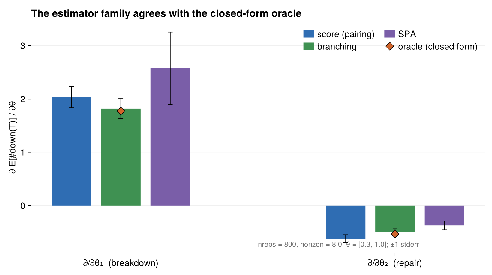

Gradient Estimators
The likelihood workflow differentiates the log-likelihood of a single fixed trace. The companion example, src/repairshop/repairshop_gradients.jl, tackles a harder problem: estimating the gradient of an expectation over trajectories — here, the derivative in θ of the expected number of down machines at a horizon time. It runs ClockGradients' whole estimator family against one closed-form oracle, on the same simple law.
The closed-form oracle
Because the machines are independent two-state chains, the expected number down at time T, starting all-up, has a closed form:
expected_down(θ, machine_cnt, horizon) =
machine_cnt * (λ / (λ + μ)) * (1 - exp(-(λ + μ) * horizon)) # λ, μ = θ[1], θ[2]
expected_down_gradient(θ, machine_cnt, horizon) =
ForwardDiff.gradient(p -> expected_down(p, machine_cnt, horizon), θ)Every estimator below is checked against expected_down_gradient. The test suite first cross-checks the oracle itself against a finite difference, so the reference is trustworthy before anything is compared to it.
The pure-model twin
Two of the estimators need to replay records and speculatively fire pairs of events, so they require the model expressed as a pure ClockGradients "law" — five functions (initial_state, clockkeytype, enabled, clock_distribution, fire) over an explicit state — rather than the observed-physical ChronoSim model. That twin is ShopLaw, whose state is just a boolean down-vector:
struct ShopLawState
down::Vector{Bool}
end
Base.:(==)(a::ShopLawState, b::ShopLawState) = a.down == b.downThe custom == matters: SPA's criticality gate recognizes commuting event swaps by comparing states by value, and the default struct equality is identity, which would silently disable the gate. The twin's clock keys deliberately match ChronoSim's convention — (:Breakdown, m) and (:Repair, m) — and the estimator audits the twin's enabled set against the live simulation at every step, stopping with a named error on the first disagreement so the hand-written duplication cannot drift.
The estimators
The repair_shop_gradients_demo runs all four (oracle plus three estimators) and prints each against the oracle. Each estimator illustrates a different member of the family and a different lesson.

Per parameter component, the score (pairing), branching, and SPA estimates with ±1 standard-error bars bracket the closed-form oracle (diamond); nreps = 800, horizon = 8.0, θ = [0.3, 1.0]. SPA's wider bars reflect the caveat below — it has no variance advantage on this order-insensitive functional.
Score / IPA pairing — repair_shop_pairing. Runs the score-function and pathwise (IPA) estimators together on the pure model. For a terminal down-count, the pathwise estimate is identically zero — the count is a frozen discrete read that pathwise differentiation cannot see — while the score estimator recovers the oracle. The pairing exists precisely to flag that the IPA estimate is biased here:
@test pair.ipa[j] == 0.0 # frozen discrete read
@test abs(pair.score[j] - oracle[j]) < 4 * pair.score_stderr[j]
@test pair.score_stderr[j] < abs(oracle[j]) / 5 # standard error bites
@test any(pair.bias_detected)Branching estimator — repair_shop_branching. The weak-derivative branching estimator, driven through the live ChronoSim simulation via the ClockGradients–ChronoSim extension. It matches the oracle within four standard errors:
@test abs(br.estimate[j] - oracle[j]) < 4 * br.stderr[j]
@test br.stderr[j] < abs(oracle[j]) / 4Smoothed perturbation analysis (SPA) — repair_shop_spa. Runs through the live simulation with ShopLaw as the pure-model twin it audits. SPA's criticality gate asks whether swapping the order of two events would change the outcome; on independent machines every swap is harmless, so the gate proves every swap commutes, spawns no clones, and the whole derivative flows through its horizon boundary term (machines crossing into the observation window). The structural diagnostics make that visible:
@test spa.skip_fraction == 1.0 # every swap proven harmless
@test spa.clones_per_rep == 0.0 # so no clones were spawned
@test spa.ipa_part == [0.0, 0.0] # the derivative is all boundary termAn honest caveat
The SPA docstring is candid that this model does not play to SPA's strengths: with no order effects, SPA has no variance advantage here, and the plain score estimator is several times tighter per replication. SPA earns its keep on order-carried functionals — queueing counts, contended first-passage times — not on independent machines. The example includes it anyway because the point is to show the whole family on a law simple enough to check exactly, including where each member is and is not the right tool.
The tests
test/test_repairshop_gradients.jl is a statistical suite following what its header calls the "four standard-error convention": fixed seeds, agreement within four standard errors, plus a standard-error smallness guard so the comparison actually bites. Its four testsets are (1) the oracle self-check against a finite difference, (2) the pairing flagging the pathwise zero while the score recovers the oracle, (3) the branching estimator matching the oracle, and (4) SPA proving every swap harmless and carrying the derivative in its horizon term.
The result objects the estimators return are worth knowing when you read the tests: pairing exposes .ipa, .score, .score_stderr, and .bias_detected; branching exposes .estimate, .stderr, and .clones_per_rep; SPA exposes .estimate, .stderr, .skip_fraction, .clones_per_rep, and .ipa_part.